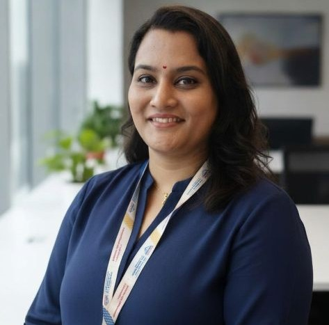

Prof. Anugamini P. Srivastava
Associate Professor

Associate Professor
Dr. Anugamini P. Srivastava is an accomplished academic, researcher, and management educator with over a decade of experience in teaching, research, and doctoral supervision. She currently serves as Associate Professor at Dr. Vishwanath Karad's MIT World Peace University (MIT-WPU), Pune, India, and is also associated with INTI International University, Nilai, Malaysia, as a Research Fellow, contributing to international research collaborations and interdisciplinary scholarship. She earned her Ph.D. from the Indian Institute of Technology (IIT) Roorkee, India, as a UGC-NET Junior Research Fellow and completed her higher education at the University of Allahabad (Prayagraj), India. She has further strengthened her academic expertise through professional learning and certifications from globally renowned institutions, including Rice University, USA, and Johns Hopkins University, USA. Dr. Srivastava has published extensively in leading international journals indexed in Scopus, Web of Science, and ABDC, including the Journal of Cleaner Production, Business Ethics, the Environment & Responsibility, Journal of Global Information Management, Tourism Management Perspectives, and the International Journal of Productivity and Performance Management. Her research spans leadership, human resource management, sustainability, digital transformation, entrepreneurship, analytics, and higher education. Her recent work, published in the Australasian Journal of Engineering Education (Q1), focuses on marine engineering students, competency development, learning outcomes, and engineering education. An active contributor to the global academic community, Dr. Srivastava serves on the editorial boards and reviewer panels of more than 30 international journals published by Elsevier, Emerald, Springer Nature, Wiley, Taylor & Francis, and IGI Global. She has also served as a Guest Editor for several reputed international journals. Her scholarly excellence has been recognized through multiple Best Paper Awards at prestigious conferences, including those hosted by IIM Ahmedabad, O.P. Jindal Global University, and other leading institutions. Through her research, mentorship, and international collaborations, Dr. Srivastava continues to advance knowledge and contribute significantly to global management and higher education scholarship.
Profiles